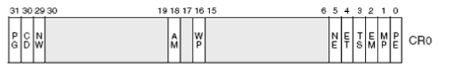
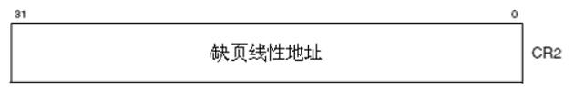
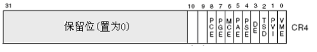
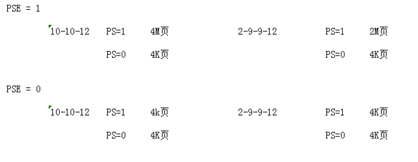
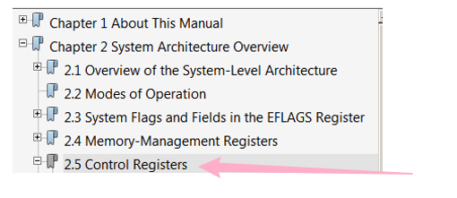

# 控制寄存器
控制寄存器用于控制和确定 CPU 的操作模式。
控制寄存器有五个 Cr0 Cr1 Cr2 Cr3 Cr4 其中 Cr1 保留， Cr3 存储的是页目录表基址
# CR0

说明：
PE位 ：启用保护（Protecction Enable）标志
PE=1 ：保护模式
PE=0 ：实地址模式
这个标志 仅开启段级保护 ，而没有启用分页机制
若要启用 分页机制 ，那么 PE 和 PG 标志都要置位
PG位 ：分页机制标志
PG=1 ：开启了分页机制
PG=0 ：未开启分页机制
在开启这个标志位之前必须已经或者同时开启 PE 标志
PG=0 且 PE=0 ：处理器工作状态为实地址模式
PG=0 且 PE=1 ：处理器工作状态为没有开启分页机制的保护模式
PG=1 且 PE=0 ：不存在。在 PE 没有开启的情况下无法开启 PG
PG=1 且 PE=1 ：处理器工作状态为开启了分页机制的保护模式
WP位 ：写保护（Write Proctect）标志
对于 Intel 80486 或以上的 CPU ，CR0 的 16 位是写保护标志
当设置该标志时，处理器会禁止 超级用户程序 （例如特权级 0 的程序）向用户级只读页面执行写操作
当 CPL<3 的时候：
- 如果 WP=0 可以读写任意用户级物理页，只要线性地址有效
- 如果 WP=1 可以读取任意用户级物理页，但对于只读的物理页，则不能写
# CR2

当 CPU 访问某个无效页面时，会产生缺页异常，此时，CPU 会将引起异常的线性地址存放在 CR2 中
举例：
- 当 CPU 访问某个物理页，但 PDE/PTE 的 P 位为 0 时，会产生缺页异常
- 缺页异常一旦发生，CPU 会将引起缺页异常的线性地址存储到 Cr2 中
- 此时，操作系统的处理程序开始对异常进行处理
- 若处理结束后，虽然 PDE/PTE 的 P 位为 0，但实际上它被写进了页面
- 这时，处理程序会将数据从页面中读出，再挂上一个有效的物理页，让程序接着往下跑
- 程序往下跑时，操作系统必须要记录程序原先已经跑到了哪里
- 此时，Cr2 便派上了用场，因为产生异常时的线性地址存在了 Cr2 中
- 但如果异常处理程序检测到用户访问的页面是一个未分配的页面
- 这时，操作系统会报告一个 异常 ，告诉我们在哪里发生了错误
- 若没有 Cr2 寄存器，当进入异常处理程序时，将找不到回去的线性地址
# Cr4 寄存器

PAE/PSE 说明：
PAE=1 是 2-9-9-12 分页 PAE=0 是 10-10-12 分页。
PSE：大页开启标志。

注意：关于控制寄存器的更多细节，请参考 Intel 白皮书第三卷

# Reference
滴水课件
https://blog.csdn.net/qq_41988448/article/details/102763646